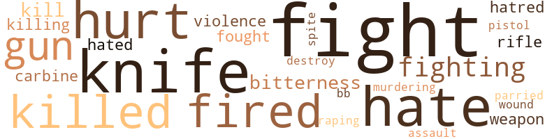

7 music-related terms matched in this text.
Most frequent terms in this topic: section (2); Music (2); whistling (1); music (1); jive (1)

music.n.01
Definition: an artistic form of auditory communication incorporating instrumental or vocal tones in a structured and continuous manner
| word |
sentence |
| music |
With Eckstine on the hi-fi , " Nice music , huh ? " she asked . |
| Music |
Music played softly like from a cloud . |
| Music |
The time was now 3:50 a.m. Music was playing softly . |
section.n.01
Definition: a self-contained part of a larger composition (written or musical)
| word |
sentence |
| section |
Mc did remember that , and he promised that this mistake would never happen again , not to Lilly , There were times when Mc would go into the white section of Washington , D.C. hunting for old newspapers to make enough money to buy socks for him and his sister . |
| section |
He noticed an ad about an apartment for rent in a nice section of the town that did not have the " white only " remark ; 5054 Georgia Avenue , in the vicinity of Walter Reed Army Hospital . |
swing.n.05
Definition: a style of jazz played by big bands popular in the 1930s; flowing rhythms but less complex than later styles of jazz
| word |
sentence |
| jive |
Mc remembered the light-skinned Negro passing for white who approached him late one night at about 3:00 a.m. on his elevator at the Skyline apartment and said loudly in surprise to Mc : " I know you are tired of this jive , man , these society crackers , these half-sick chicken paddies . |
whistle.v.01
Definition: make whistling sounds
| word |
sentence |
| whistling |
Mc dashed out of the bunker as mortar fire sent shrap - nel whistling through the air . |
74 violence-related terms matched in this text.
Most frequent terms in this topic: fight (11); knife (7); hate (6); hurt (5); fired (4)

bb.n.01
Definition: a small pellet fired from an air rifle or BB gun
| word |
sentence |
| BB |
There were letters printed so neatly in black and white GALE ST. So often he had seen these same lamp posts broken or the sign scarred in some way by some kid who threw rocks or used it as a target for his new BB gun . |
carbine.n.01
Definition: light automatic rifle
| word |
sentence |
| carbine |
Mc did not wait too long ; he shoved his letter into his pocket grasping his carbine rifle with his left hand , hugging in his right hand a .45 caliber . |
| carbine |
Mc fired his carbine , he could see wave after wave of Viet Cong . |
destroy.v.04
Definition: put (an animal) to death
| word |
sentence |
| destroy |
He dreamed of Margaret , why he could not marry her ; now he knew why , for one reason , she was too old , and she loved him too much and this could be dangerous ; she would eventually destroy him . |
fight.n.05
Definition: a boxing or wrestling match
| word |
sentence |
| fight |
Why fight for peo - ple that do n't care how many black men get killed ? |
| fight |
Then Mc remembered how he almost got into a fight with Jake over this and it did no good ; Jake was a helpless Negro with no drive , no skill , no class whatsoever , and this Mc hated Jake for . |
| fight |
" A fight . " |
| fight |
She sipped her drink and said : " What was the fight about ? " as she patched Mc 's cut arm . |
fight.v.02
Definition: fight against or resist strongly
| word |
sentence |
| fight |
Nancy : " If you really want to do something , help fight the Ku Klux Klan and those people who are burning churches . |
| fight |
The same guys you fight with will come back and call you a nigger and burn your churches . |
| fought |
He turned around and ran through mortar fire to the north side of the Camp where he fought with Viet Cong forces hand to hand . |
| fight |
I 've got four more months , ten years of active duty , I am giving it up and fight for something I feel is a better cause . |
| fighting |
Captain Bob L. McClain , a highly decorated officer , was out of the American Army , now a guerrilla leader fighting the Portuguese along Angola and the white South Africans . |
| fight |
He recalled how he had to fight to de - fend his sister , how he struggled without things he needed ; how he wore ragged underwear to keep his sister in new panties ; how he used to have to eat other fellows ' leftovers in the school cafeteria to save enough money so he could get his sister a new skirt or shoes ; how he had to struggle to keep his sister clean and a pure virgin . |
| fought |
Mc fought with him until his sister could get free ; then he took out his pocket knife and cut him across the face and Mc 's opponent ran crying and bleeding , grasping his face with his hand . |
| fight |
Why did n't he stay there in Mississippi and help fight this racial problem , help his people ? |
| fighting |
" It was worth fighting for ? " |
| fight |
" Is n't it bad enough for Negroes and whites to fight ; then Negroes fight among themselves . |
| fight |
" Is n't it bad enough for Negroes and whites to fight ; then Negroes fight among themselves . |
| fighting |
Bob , you should be ashamed of yourself , fighting your son . " |
gun.n.01
Definition: a weapon that discharges a missile at high velocity (especially from a metal tube or barrel)
| word |
sentence |
| gun |
Machine gun fire . |
| guns |
Mc ordered three machine guns and that all concentrated effort be provided in that sector . |
| gun |
There were letters printed so neatly in black and white GALE ST. So often he had seen these same lamp posts broken or the sign scarred in some way by some kid who threw rocks or used it as a target for his new BB gun . |
hate.n.01
Definition: the emotion of intense dislike; a feeling of dislike so strong that it demands action
| word |
sentence |
| hate |
" The black man 's feelings are rising with red-hot in - fernos of vicious hate . |
| hatred |
They have too much money to be prejudiced and a lot of them have more good things to do and more important things instead of creating racial hatred . |
| hate |
And my husband is just too old for hate . |
| hate |
Now and then he gets mean , but no hate . |
| hatred |
Those are two more racial hatred coun - tries . |
| hate |
'' There are three little words : Fear , hope , hate . |
hate.v.01
Definition: dislike intensely; feel antipathy or aversion towards
| word |
sentence |
| hated |
Then Mc remembered how he almost got into a fight with Jake over this and it did no good ; Jake was a helpless Negro with no drive , no skill , no class whatsoever , and this Mc hated Jake for . |
| hated |
Mc hated this man for not having the willpower to pull out of this silly act and try to better himself . |
| hate |
Fearing the modern negro image , hope he does not get edu - cated , hate in order to create violence . |
| hate |
Mc : " Well , I guess I 'll get dressed , I hate to wear a good thing out . " |
hurt.v.04
Definition: cause damage or affect negatively
| word |
sentence |
| hurt |
I was hurt for years until I met you . |
kill.v.10
Definition: cause the death of, without intention
| word |
sentence |
| killed |
Why fight for peo - ple that do n't care how many black men get killed ? |
| killing |
I can remember too well the summer of 1963 when an explosion shattered the 16th Street Baptist Church in Birmingham , Alabama , killing four black young girls . |
| killing |
People who were bitter for different reasons as he was , who would join such an organization to let off their steam ( their hatred ) built inside by killing or murdering , sometimes threaten - ing . |
| killed |
God was a black man , that 's why he was killed . " |
| kill |
I made that a habit after reading in the paper how people will come up and kill you for 25 cents here in Washington . |
| kill |
She kissed Mc again and again biting his ear softly , then said : " I 'll do anything for you , I 'll die for you , kill for you , I 'll trade all of this for the slums for you . " |
| killed |
Mc killed eight communist Chinese . |
| killed |
He continued the assault , armed only with his M-l rifle and killed eight more of the enemy . |
| kill |
You would probably want to kill me for this , but I am going back in the Army . " |
knife.n.02
Definition: a weapon with a handle and blade with a sharp point
| word |
sentence |
| knife |
Mc fought with him until his sister could get free ; then he took out his pocket knife and cut him across the face and Mc 's opponent ran crying and bleeding , grasping his face with his hand . |
| knife |
At that moment Jake came up with a 6-inch switch blade knife and jabbed it a quarter of an inch into Mc 's arm . |
| knife |
As Mc parried Jake 's thrust , Mc grabbed Jake 's hand holding the knife and twisted it making Jake release the knife . |
| knife |
As Mc parried Jake 's thrust , Mc grabbed Jake 's hand holding the knife and twisted it making Jake release the knife . |
| knife |
The knife fell to the ground . |
| knife |
Mc stepped back kick - ing the knife that slid six yards down the dressing-room floor . |
| knife |
While kneeling Mc grabbed Jake by the collar of his shirt and said , " You are a traitor , a coward to yourself and your people ; think about that , Tom , " and walked over and picked up the knife while walking out of the door . |
malice.n.01
Definition: feeling a need to see others suffer
| word |
sentence |
| spite |
He was bitter inside again , how his father had no respect for his 15-year - old daughter and mother in spite of her evil ways . |
murder.v.01
Definition: kill intentionally and with premeditation
| word |
sentence |
| murdering |
People who were bitter for different reasons as he was , who would join such an organization to let off their steam ( their hatred ) built inside by killing or murdering , sometimes threaten - ing . |
open_fire.v.01
Definition: start firing a weapon
| word |
sentence |
| fired |
Mc fired his carbine , he could see wave after wave of Viet Cong . |
| fired |
The " A " team 's mortar crew fired candlepowered illuminating the battle area constantly . |
| fired |
The enemy fired at him . |
| fired |
With his .45 caliber in his right hand Mc fired knocking two Viet Cong to the ground . |
pain.v.02
Definition: cause emotional anguish or make miserable
| word |
sentence |
| hurt |
This man was bitter from something ; somehow this man had been hurt and had to let off steam . |
| hurt |
He thought , as he daydreamed , this man is sick , someone had hurt him and bad , so he was taking this bitterness out on every white person he could , in revenge for whatever it was that was done to him . |
| hurt |
Nancy said : " Do you think I want to hurt you ? |
| hurt |
I have been hurt . |
parry.v.01
Definition: impede the movement of (an opponent or a ball)
| word |
sentence |
| parried |
As Mc parried Jake 's thrust , Mc grabbed Jake 's hand holding the knife and twisted it making Jake release the knife . |
pistol.n.01
Definition: a firearm that is held and fired with one hand
| word |
sentence |
| pistol |
Then pistol whipping an - other one to death , ten of the VC 's were captured . |
rape.n.03
Definition: the crime of forcing a woman to submit to sexual intercourse against her will
| word |
sentence |
| assault |
He continued the assault , armed only with his M-l rifle and killed eight more of the enemy . |
rape.v.01
Definition: force (someone) to have sex against their will
| word |
sentence |
| raping |
How easily I could be framed , I can see it now in the newspapers - ' A 17-year-old unemployed Negro is being held without privilege of bond today pending a hearing in District Court on a charge of raping a 23-year-old white lady . ' |
resentment.n.01
Definition: a feeling of deep and bitter anger and ill-will
| word |
sentence |
| bitterness |
He thought , as he daydreamed , this man is sick , someone had hurt him and bad , so he was taking this bitterness out on every white person he could , in revenge for whatever it was that was done to him . |
| bitterness |
Mc was boiling , surprisingly spit out all the bitterness that was inside . |
| bitterness |
With bitterness he thought of the Jones 's trying to outdress the Smith 's , the crooks , bookies , fortune tellers , superstitious root carriers , voodoo junkies , phony rever - ends , and hypocrites , and with the drunken father was no help . |
rifle.n.01
Definition: a shoulder firearm with a long barrel and a rifled bore
| word |
sentence |
| rifle |
Mc did not wait too long ; he shoved his letter into his pocket grasping his carbine rifle with his left hand , hugging in his right hand a .45 caliber . |
| rifle |
He continued the assault , armed only with his M-l rifle and killed eight more of the enemy . |
violence.n.01
Definition: an act of aggression (as one against a person who resists)
| word |
sentence |
| violence |
All this violence , killing , castrating , doing everything you can think of to deny you your freedom in the United States and you want to go back to Vietnam . |
| violence |
Fearing the modern negro image , hope he does not get edu - cated , hate in order to create violence . |
weapon.n.01
Definition: any instrument or instrumentality used in fighting or hunting
| word |
sentence |
| weapons |
SFC Tower , the weapons man , shouted : " They are getting closer . " |
| weapon |
Even now South Africa is trying hard to develop a weapon to decrease the black people of that country . |
wound.n.01
Definition: an injury to living tissue (especially an injury involving a cut or break in the skin)
| word |
sentence |
| wound |
" There now , " she said as she finished patching Mc 's wound . |
14 religion-related terms matched in this text.
Most frequent terms in this topic: God (4); churches (3); paradise (2); temple (1); Moslems (1)
church.n.02
Definition: a place for public (especially Christian) worship
| word |
sentence |
| churches |
Nancy : " If you really want to do something , help fight the Ku Klux Klan and those people who are burning churches . |
| churches |
The white man built beautiful houses and churches , farmed , fed his family the fats of his land to his white chil - dren using the black man 's labor and sweat , while the black man continues to be confined worse than a dog . |
church.n.04
Definition: the body of people who attend or belong to a particular local church
| word |
sentence |
| churches |
The same guys you fight with will come back and call you a nigger and burn your churches . |
| Church |
I can remember too well the summer of 1963 when an explosion shattered the 16th Street Baptist Church in Birmingham , Alabama , killing four black young girls . |
eden.n.01
Definition: any place of complete bliss and delight and peace
| word |
sentence |
| paradise |
She had more than a good heart , she was some - thing that God sends to earth to do a job and returns to his paradise . |
| paradise |
The room looked like a paradise . |
god.n.03
Definition: a man of such superior qualities that he seems like a deity to other people
| word |
sentence |
| God |
She had more than a good heart , she was some - thing that God sends to earth to do a job and returns to his paradise . |
| God |
Today Mc and his sister were dressed in style and had food to eat , but there was no love ; it was nothing like being with Grandma Jenkins , God 's angel , who was sent down to guide them ; they 'll never forget her . |
| God |
He remembered one Sunday morning when a negro man , walking across Flor - ida Avenue and I Street , N.W. , in D.C. approached him after Sunday school and said : " Who is God ? |
| God |
God was a black man , that 's why he was killed . " |
muslim.n.01
Definition: a believer in or follower of Islam
| word |
sentence |
| Moslems |
He thought of the Ku Kluxers , the Black Moslems , and many others , who were making a fortune from the jealous , ignorant , naive American people . |
religion.n.01
Definition: a strong belief in a supernatural power or powers that control human destiny
| word |
sentence |
| faith |
He thought and remembered the oath of office - " I , Bob Landa McClain , 089334 , having been appointed an officer in the Army of the United States , as indicated above , in the grade of 2nd Lieutenant do solemnly swear and affirm that I will bear true faith and allegiance to the same ; thta I take this obligation freely , without any men - tal reservation or purpose of evasion ; and that I will well and faithfully discharge the duties of the office upon which I am about to enter ; so help me God . " |
saint.n.02
Definition: person of exceptional holiness
| word |
sentence |
| Saint |
But when Saint Patrick 's Day came , every white man and woman , that was half French and Italian , was Irish now . |
temple.n.03
Definition: an edifice devoted to special or exalted purposes
| word |
sentence |
| temple |
delicatessen store with a bit of sweat streaming down his temple . |